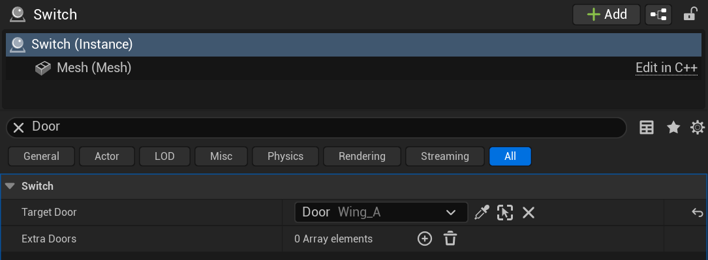
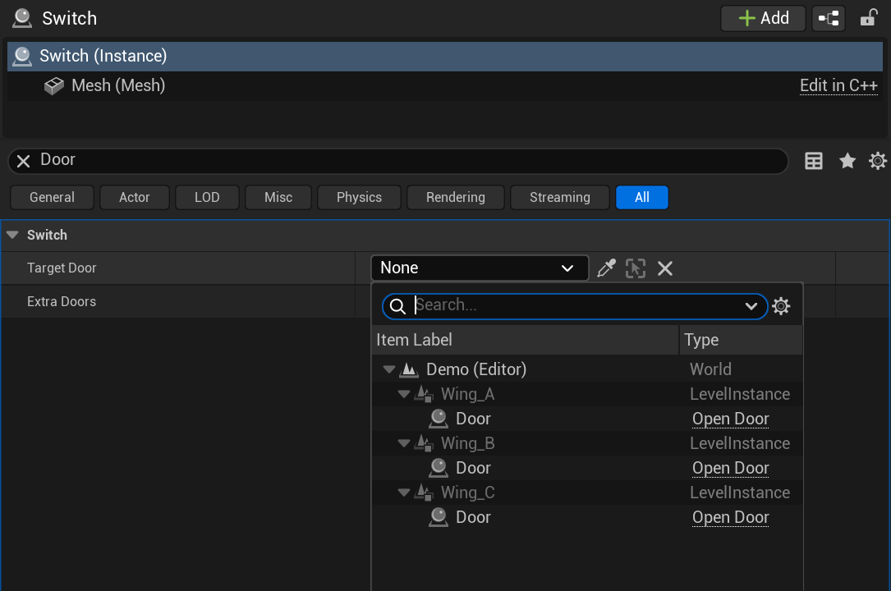
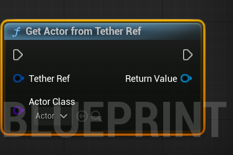
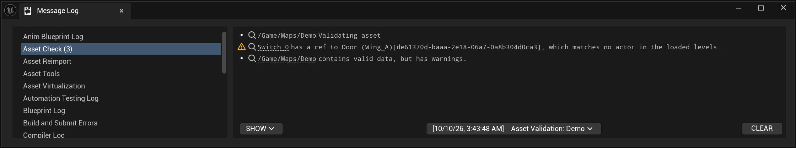

Plain Language
Tether In Plain Words
Every actor placed in an Unreal level carries a hidden ID that the engine made up when the actor was placed. Think of it as a serial number. It's unique, it never changes, and when you place a room three times, each copy of the door inside gets its own.
A "Tether Ref" is a small note that holds one of those serial numbers, plus the door's name so the note still reads sensibly when the door isn't around. When the game needs the door, the plugin looks through the actors that have the tag and hands back the one whose serial number matches.

If two actors ever had the same serial number, the plugin refuses to guess and gives back nothing. Opening the wrong door would be worse than opening no door. The editor's checks tell you about the clash long before that.
The Pieces
The Pieces
- Tether (a component)
- The tag. Put it on anything that needs to be pointed at.
- Tether Ref (a property type)
- The note. Put it on anything that needs to point.
- The Details row
- The dropdown, the eyedropper, and the name display you use to pick.
- The checks
- Part of "Validate Assets". They look for pointers that can't work.

For Engineers
The Technical Version
The identity is the engine's per-placement actor instance guid: the actor's
ActorGuid, combined with the guids of the level instances above it. In the
editor the plugin takes the engine's instance guid where one exists and folds that chain
itself where it doesn't, which is a level instance open for editing. Nothing is minted. A
ref picked at an actor in the owner's own level is stored relative. It holds the target's
bare guid plus the level instances in between, and folds onto the owner's placement at
resolve time.
UPROPERTY(EditAnywhere, meta = (AllowedClasses = "/Script/MyGame.Door"))
FTetherRef TargetDoor;
if (ADoor* Door = UTetherLibrary::ResolveTetherRef<ADoor>(this, TargetDoor))
{
Door->Open();
}
Resolution
Each UTetherComponent registers with a world subsystem as its level
becomes visible and leaves when it's hidden or destroyed. A resolve is a hash lookup in that
set by placement id, and returns one actor or null. Refs are equal when they point at the
same actor the same way. That lets them work as TSet elements and
TMap keys.
Packaged builds
A cooked build releases the engine's instance guid before gameplay runs. So during a cooking save, the editor module writes the live guid into the component, and restores the editor copy afterwards. At runtime the plugin reads that baked value, folding the level-instance guid back in for Standalone level instances. We verify this path from a packaged build. Embedded, Standalone, nested, classic, distance-streamed, and runtime-loaded level instances all resolve every reference to the right placement, and nothing lands on a wrong actor.
Validation
UTetherValidator runs under Data Validation. It indexes every loaded
actor by placement id and checks each tag and each ref, including refs inside containers
and components. Under World Partition it also reads the actor descriptors. That lets it
tell "not loaded" apart from "gone".
The Reference page has the full reference. The wiring diagram shows how the pieces connect.
Deep Dive
The Details Under The Details
This section is for the engineer who wants the exact number a ref holds, the path it takes into a cooked build, and the test measurements. Everything here is as of UE 5.8 and will drift as the engine does. The code is the final word.
The identity arithmetic
A placement id is FGuid::Combine(container, ActorGuid), where the container is
the fold of the level-instance guids above the actor, outermost first, each combined onto
the last. That's the same arithmetic as the engine's FActorContainerID, so
the plugin lands on the value World Partition writes into ActorInstanceGuid
for every flattened actor. An actor in the main level has no container. Its placement id
is its bare ActorGuid.
A level's container follows one rule in both builds. If the level instance actor that owns
the level is itself placed inside something, the container is that actor's own placement.
Otherwise it's the engine's level-instance guid, which the editor folds from the actors
instead of reading, since reading it registers the level. A level loaded as a renamed copy
of its package, which is what ULevelStreamingDynamic::LoadLevelInstance makes,
takes a guid from the name the game gave it instead. Without one, it takes a guid from its
source level and the spot it was loaded at. Otherwise there is no container.
The owner rule exists for one shape: a Standalone level instance inside an Embedded one. The engine gives every placement of the outer one the same inner guid. Three rooms under three wings would hold three doors with one id. The room's level instance actor, flattened into the wing, carries the wing's term in its own instance guid. The room's level folds onto that.
Relative refs
The picker decides the form. It takes the level-instance chain of the owner and of the
target. When the owner's chain is a prefix of the target's, which means the same level or
a level instance nested in it, the ref stores the target's bare ActorGuid in
TargetId and the chain below the owner in RelativePath, and sets
bRelative. Otherwise it stores the absolute placement id. At resolve time a
relative ref folds onto the owner's container, then through its path, then onto the actor
guid. Equality and hashing include the form. A relative and an absolute ref to one actor
are two keys.
The cook step
The engine serializes ActorInstanceGuid into every cooked actor and releases it
in PostRegisterAllComponents, before any gameplay code runs. During a cooking
save, OnObjectPreSave fires for each object. The editor module does two
things while the value is still live. It writes each tethered actor's instance guid into its
component's PlacementId. And on any actor the cook has flattened into a World
Partition cell, it folds relative refs to their absolute form, since the game has no
container for a cell to fold onto. Refs whose owner is in the main container stay
relative, because a level cooking on its own learns its placement when it loads. Both
edits are undone after each package saves and again when the cook finishes. No editor
asset keeps a baked value. The cook log reports both counts.
At runtime GetBakedPlacementId folds the level's container onto the baked
value. A Standalone level instance cooked on its own baked only the actor's half. The
fold restores the placement. Embedded content baked the absolute value and sits in a level
with no container. The fold adds nothing. It reads like a double combine. It isn't.
The capture window
The owner rule needs the level instance actor's own instance guid at runtime. The
engine throws it away. The subsystem reads it in the window between load and release: in
OnLevelBeginMakingVisible for a streamed level, and in its own
Initialize for the persistent level, since subsystems come up before the
persistent level registers anything and a cooked World Partition map keeps its flattened
content there. It only captures from a level nothing owns. Inside a streamed level instance
the engine derives a value without the terms above it. The owner rule folds those by
hand. The capture is compiled out of editor builds, where the value is a live property.
The index
UTetherSubsystem keys every registered tethered actor by placement id. An
actor is filed on the first resolve after it registers, which is the earliest its placement
is known, since registration happens while its level instance may still be loading. One
whose id isn't ready yet stays pending for the next resolve. Unregister removes it from its
bucket. A bucket with two live actors resolves to null, which is the unique-or-null rule.
Validation, in full
UTetherValidator indexes every loaded actor by placement id once per
run. Errors, which fail validation: a PlacementId saved in editor data, two
loaded tethered actors sharing an id, a ref matching more than one, a ref to an actor with
no component, a ref to a child actor, a ref outside its AllowedClasses, and in
a World Partition world a ref matching no actor at all. For that last one it rebuilds
every id from the actor descriptors as ContainerID.GetActorGuid(ActorGuid) and
trusts the set only when every loaded tethered actor's live id is in it. Warnings: more than
one component on an actor, a tethered actor with no guid, and a ref matching nothing loaded,
which outside World Partition is the whole story and inside it means the descriptors
couldn't be checked, as happens while a level instance is mid-load.

Verified so far
We test the plugin against the engine's own options, all aimed at the same door: a plain soft pointer, a hard pointer, an Editor Path, and a Universal Object Locator. The maps cover Embedded, Standalone, nested three deep, Standalone under Embedded, classic sublevels, a partitioned room placed Embedded, placements a kilometre apart with a moving streaming source, and a room loaded twice at runtime. Each runs in the editor and from a packaged build, judged by where the resolved actor is.
- A tether ref resolves every placement in every map, in both builds. The only misses are from the start position of the wide map before a room has streamed in. Those hit once the player gets there.
- Nothing resolves to a wrong actor, in any map, either build.
- Editor Paths and the locator resolve Embedded placements in a packaged build and nothing else. Plain and hard pointers resolve nothing inside a level instance.
- Editor edits behave: removing and re-adding the component, duplicating and deleting the door or the room, undo, redo, commit, swapping the world asset, and break. Every one gives null or the original, never a copy.
- Saved and loaded: every door a ref hit on all five maps, saved to a slot, then loaded by a new process, in the editor and from a packaged build. Each build made 330 lookups, and all 330 hit. The first run had 4 wrong, in the runtime-copy case below, and the same day's fix closed them.
Compared
Tether And The Other Ways To Point At An Actor
Unreal has plenty of ways to point at an actor. Most were built for something else, and they hold up until the target sits inside a level instance or the game gets packaged. The ones that can name a single placement went on the same probe actor as a tether ref, all aimed at the same door, across five test maps. Each ran in the editor and from a packaged Win64 build, judged by where the resolved actor actually was. The rest we read from the 5.8 engine source and didn't probe.
Measured, in a packaged build
An Embedded level instance gets flattened into World Partition cells when it cooks. A Standalone one, and a classic sublevel, cook as levels of their own. That split is where every path-based option stops working.
| Case | Tether ref | Editor Path | Universal Object Locator | Soft pointer | Hard pointer | FActorContainerID by hand |
|---|---|---|---|---|---|---|
| Control, same level | Hit | Hit | Hit | Hit | Hit | Hit |
| World Partition Embedded room | Hit | Hit | Hit | Miss | Miss | Hit |
| World Partition Standalone room | Hit | Miss | Miss | Miss | Miss | Miss |
| Embedded room in an Embedded wing | Hit | Hit | Hit | Miss | Miss | Hit |
| Standalone room in an Embedded wing | Hit | Miss | Miss | Miss | Miss | Miss |
| Three deep, all Embedded | Hit | Hit | Hit | Miss | Miss | Hit |
| Three deep, Standalone wing in the middle | Hit | Miss | Miss | Miss | Miss | Miss |
| Classic room, wing, and tower | Hit | Miss | Miss | Miss | Miss | Miss |
| A referencer inside the room, at its own door, 18 placements | Hit | Hit | Hit | Hit | Hit | Not tried |
| Hits in the packaged build | 9 of 9 | 5 of 9 | 5 of 9 | 2 of 9 | 2 of 9 | 4 of 8 |
Nothing in any of those runs resolved to the wrong actor. A miss is always null. Editor
Paths and the locator also need EditorPaths.Enabled set while you author and
cook, and the locator has to be built in code.
What Tether adds over each one
The first five rows are the measured ones above. The rest come from reading engine source. The last column is the honest version: where an option already does the job, it says so.
| Option | What it holds | Where it falls short | What Tether adds |
|---|---|---|---|
Soft pointer (TSoftObjectPtr) | An object path | Misses everything inside a level instance in a packaged build, Embedded included, since the cook rewrites the path. | Every level-instance case, 7 more of the 9 rows. For an actor in the same level that never gets instanced, a soft pointer is already fine and needs no component. |
Hard pointer (TObjectPtr, a Level Blueprint reference) | A direct reference | Can't cross from one level to another at all, so it never reaches into a level instance from outside. | The same 7 rows, plus refs across levels. Inside one level, a hard pointer is simpler. |
| Editor Path | A path with the level-instance chain in it, cooked to a resolver | The resolver is editor-only. World Partition cooks a replacement for Embedded placements and nothing else. | The 4 Standalone and classic rows, and no engine flag. On Embedded content the two are level. |
| Universal Object Locator | A path fragment with the same chain | Same resolver, same line. Needs the flag and code to build. | Same 4 rows, plus a picker in the Details panel. |
FActorContainerID by hand | The engine's container fold, resolved through the world | The chain it folds isn't there for Standalone and classic content once cooked. | Tether uses the same fold, so the 4 Embedded rows match. It adds the bake and the capture for the other 4, and the relative form for the in-room case. |
ActorGuid or ActorInstanceGuid, read directly | The engine's own ids | ActorGuid is editor-only data. The instance guid is released when components register, so a packaged game can't read it. |
This is the gap Tether exists for, and it closes it fully. The cook bakes the instance guid into the actor, and the read folds back what the bake can't see. |
| Save-system keys: the actor's name, or a guid property you add (the Savior and Enhanced Save System pattern) | A name, or a guid minted once per actor | A minted guid lives in the level asset, so every placement of a room loads the same one. This project shipped that design first and measured exactly that. A name is the same in each copy's own level and changes on rename. | A per-placement id the engine already writes, so copies differ with nothing to mint. A tether ref makes a good save key. See the note on runtime copies below. |
Lazy pointer (TLazyObjectPtr) | A guid stored with the object in its package | One guid per object in its package, so placements of a room share it. Not probed. | Copies told apart, a picker, and validation. |
| Name or label lookup | The actor's object name or editor label | Breaks on rename. Labels don't exist in Shipping builds. Copies share names in their own levels. | Rename-proof, copies told apart, works in Shipping. Tether keeps the label only for display. |
| Actor tags and Gameplay Tags | Names on the actor | Every copy of a room carries the tags it was saved with, so a tag finds a group, never one placement. | Nothing to replace. Use tags for "all the doors" and a tether ref for "this door". They sit fine on the same actor. |
| Get All Actors Of Class, first result | Nothing | Hands back whichever actor comes first. | A specific placement, and null rather than a guess. |
In a save game
A tether ref saves like any struct. Tether.SaveGame writes refs to a real slot
file, to memory, and through a game's actor-state archive, then loads them into a fresh
world. They come back whole and resolve to the same placements. That test also found the
one real gap: an actor-state save writes only fields flagged SaveGame, and the
ref's fields weren't. They are now.
The probe then did it for real. On every map it saved a ref to each door it found three ways, quit, and loaded the slot in a new process, uncooked and packaged. The three ways are a ref made at runtime from the found door, a copy of the authored ref, and the owner's actor state.
| Read launch | Saved records | Lookups | Hit | Miss | Wrong |
|---|---|---|---|---|---|
| Five maps, same load order | 96 | 288 | 288 | 0 | 0 |
WP_Dynamic, copies loaded in reverse, engine-generated names, first run | 7 | 21 | 17 | 0 | 4 |
WP_Dynamic, copies loaded in reverse, engine-generated names, after the fix | 7 | 21 | 21 | 0 | 0 |
WP_Dynamic, copies loaded in reverse, fixed names | 7 | 21 | 21 | 0 | 0 |
Each row is the same in the editor and in the packaged build. The 4 wrong results in the first run were the two doors inside the runtime copies, saved as absolute refs, directly and through actor state. Each came back as the other copy's door. The authored refs in those copies are relative, so they still hit.
A level loaded at runtime with LoadLevelInstance gets a package name with a
load counter in it, unless you pass OptionalLevelNameOverride. The first run keyed
copies on that name, so they traded ids when they loaded in a different order. A saved ref
gave the wrong copy's actor rather than null. That's the one wrong result any of these tests has
produced. A copy with a generated name now keys on its source level and the spot it was loaded
at, which the game picks again next session. A name you pass yourself still wins.
Two runtime cases can't be keyed reliably, so Tether refuses them. One is an unnamed copy
loaded at the same spot as another unnamed copy of the same level. The other is a World
Partition world loaded at runtime with LoadLevelInstance. Making a ref to an
actor in either gives an unset ref and a warning, and every resolve into them gives null.
The probe loads both on purpose and checks every door, authored ref and runtime ref in
them, plus the doors that should still work.
| Build | Checks | Pass | Fail |
|---|---|---|---|
| Editor | 18 | 18 | 0 |
| Packaged | 18 | 18 | 0 |
Limits
Limits
- It points at things placed in a level, not things spawned while the game runs.
- "Move to Level", "Create Level Instance", and "Break" give an actor a new ID. Refs to it need re-picking. Validation flags them.
- Two placements of one room are two different targets. A ref picks one copy, never all copies of the door.
- Resolve a ref from the thing that holds it. A relative ref folds onto its owner's placement. Resolving it from an actor in another level gives nothing.
- An absolute ref saved against a level copy loaded at runtime finds it next session when the copy loads at the same spot or under the same name.
- Refused outright: an unnamed runtime copy sharing its spot with another unnamed copy of the same level, and a World Partition world loaded at runtime. Refs into them can't be made and don't resolve.